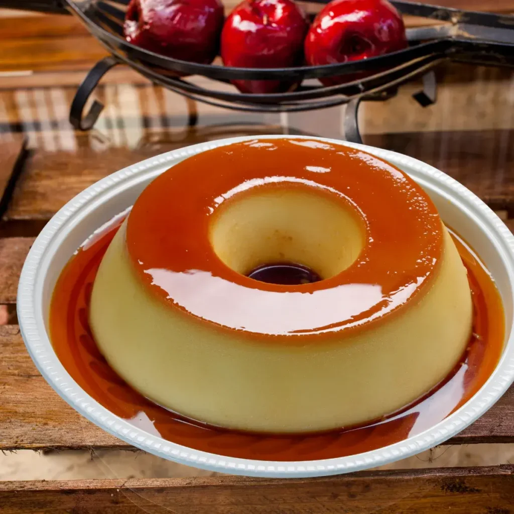

Receita de Pudim Simples

Ingredientes
Calda:
- 1 xícara de açúcar
- 1/2 xícara de água
Pudim:
- 3 ovos
- 1 lata de leite condensado
- 1 medida de leite integral (usar a lata como medida)
Modo de Preparo
- Derreta o açúcar em fogo médio até ficar dourado.
- Adicione a água com cuidado e mexa até formar a calda.
- Espalhe a calda na forma e reserve.
- No liquidificador, bata os ovos, leite condensado e leite.
- Despeje a mistura na forma caramelizada.
- Cubra com papel alumínio.
- Asse em banho-maria a 180°C por cerca de 1 hora.
- Espere esfriar e leve à geladeira por no mínimo 6 horas.
- Desenforme e sirva.